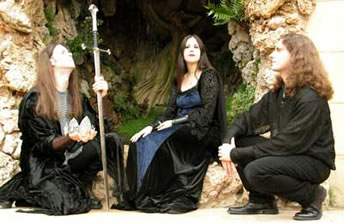
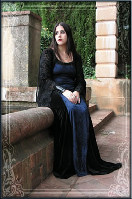

A carreira da banda catalã Narsilion
tem início em 1999, quando o músico Sathorys
Elenorth, com apenas 18 anos, inicia um projeto solitário
no qual combina elementos da música medieval com
referências clássicas, tendo como temática
a tristeza, a solidão e a natureza.
No
ano seguinte Sathorys grava seu primeiro trabalho sob o
título de Lacrima Profundere. Distribuído
em K-7, o trabalho traz dez faixas que fundamentam a proposta
musical. Em seguida mais dois trabalhos são produzidos
também no formato K-7: Ancient Medieval Times
(com cinco músicas) e Autumnal Caress (trazendo
dez faixas) que exalam melancolia e requinte.
A partir deste momento, Sathorys passa a
contar com a presença de Lady Nott, violinista e
vocalista que já havia participado de outros trabalhos
com Gotlethe e Nocturn. A dupla adota
o nome Aranmanoth.
Em abril de 2002 a dupla se junta à
cantora Lady Morte e criam o Ordo Funebris. No
mês seguinte a primeira demo já é produzida.
Cantar a La Morte foi gravada no estúdio
Maxim Sound em Barcelona e reúne o talento
e a sensibilidade dos jovens músicos. Torre Salvana
é um dos destaques de trabalho.
No mesmo ano, o nome da banda, bem como
as músicas são registradas legalmente. Em
agosto, a gravadora Drama Company de Bilbau oferece
ao trio a oportunidade de gravar um álbum completo.
As músicas da demo anterior são regravadas
e agregadas à algumas inéditas. O álbum
é batizado como Cantar a la Morte: Fabula Triste.
Este disco traz sete faixas repletas de
lirismo. A música Lycanthia é um
dos destaques trazendo uma instrumentação
medieval, percussão ritmada e sintetizadores atmosféricos
que produzem um clima leve e ao mesmo tempo melancólico,
levando o ouvinte a um bosque encantado de alguma era distante.
Em novembro é realizada a primeira apresentação
pública em uma casa noturna. As faixas A Witches
Song, Torre Salvana e Maellus Malleficarum
passam a integrar coletâneas do gênero. A repercussão
estava sendo muito positiva e embalou Sathorys, Lady Nott
e Lady Morte a continuarem seu belíssimo trabalho.
No início de 2003, Cantar a
La Morte: Fabula Triste é distribuído
por toda a Espanha; além de Alemanha, Itália,
França e Canadá. Neste mesmo momento, é
realizada uma apresentação na Sala Mephisto
de Barcelona. Entre abril e maio, a banda concede entrevistas
à revistas especializadas e o álbum recebe
uma ótima recepção da crítica,
sendo escolhido como o "álbum do mês"
pela revista Barbarian Magazine. Ao mesmo tempo,
iniciam-se os preparativos para um novo álbum.
Songs from the Enchanted Garden
foi lançado pela Drama Company em 2003. Suas nove
faixas sustentam a proposta única e ao mesmo tempo
diversificada do Ordo Funebris. Songs from
the Enchanted Garden conduz mais uma vez o ouvinte
à terras distantes repletas de misticismo e poesia.
Portrait Of Innocence traz uma vocalização
suave quase recitada sobre o arranjo de pianos, teclados
e violinos. La Madre Tierra é percussiva
e ritmada lembrando trilhas sonoras de filmes medievais.
Ainda, Santa Compana traz uma melodia de flautas
leves que se entrelaçam com a voz hipnótica
de Lady Morte.
Songs from the Enchanted Garden
ratifica o potencial dos jovens músicos e confirma
uma proposta musical original e construída com talento
e poesia. Paralelamente, Sathorys e Lady Nott dão
continuidade ao trabalho em dupla. Ainda em 2003, o trio
se separa e a promissora trajetória do Ordo Funebris
infelizmente é interrompida.
De volta à dupla Sathorys e Lady
Nott, um novo trabalho foi produzido entre dezembro de 2003
e janeiro de 2004. Return to the Silver Forest
foi gravado novamente no Maxim Sound Studios e lançado
pelo próprio selo Earendil Records em março
de 2004. Neste momento, a dupla já havia escolhido
o nome Narsilion que significa (em "linguagem
de elfos") canção da lua e do sol.
Return to the Silver Forest traz
cinco faixas que resgatam e dão continuidade aos
trabalhos anteriores da dupla. A música Mirror
of Nature é uma combinação de
sonoridades sutis com vocalizações e timbres
atmosféricos que criam um ambiente mágico
e surreal ao longo de mais de sete minutos.
Este
trabalho proporcionou ao Narsilion uma ótima recepção
do público e da crítica especializada e ainda
permitiu uma aproximação com a gravadora Caustic
Records. Ainda em 2004, um novo trabalho estava sendo
composto quando o flautista Dark Wind junta-se à
dupla como músico convidado durante as gravações
do disco. Em outubro é lançado Nerbeleth
e Dark Wind passa a integrar a formação oficial.
Nerbeleth (que na linguagem élfica
significa ao cair da noite/anoitecer) foi gravado
novamente no Maxim Sound e lançado pela Caustic Records,
contando com a participação da vocalista Ethia
na faixa El Llanto de las Sirenas. O álbum
traz onze faixas, sendo as cinco do EP anterior e mais seis
inéditas. Um dos destaques é a música
Existencia Encantada que soa quase como uma canção
de ninar doce e melancólica, com arranjos de violino,
violão e a voz suave e poderosa de Lady Nott.
Nerbeleth conseguiu uma excelente
repercussão nacional e internacional, colocando o
Narsilion em evidência e proporcionando a oportunidade
de tocar ao lado de bandas como Ataraxia e Morpheus.
Entre agosto e dezembro de 2005 o trio
já gravava nos estúdios Ax e Maxim
Sound o segundo álbum de sua carreira. Nesse
momento já havia uma grande expectativa em relação
a este disco. Porém, o lançamento oficial
aconteceu apenas em abril de 2006.
Arcadia foi distribuído
em digipack pela Caustic Records e traz um mundo encantado
em suas dez faixas. As músicas Arcadia e
Lagrimas de Cristal representam bem o clima de
unicórnios, fadas e gnomos que o Narsilion transmite.
Novamente a banda conta o apoio de músicos convidados
nos vocais e locução.
Arcadia encontra uma recepção
acima da expectativa e recebe críticas positivas
em vários países da Europa e até mesmo
nos Estados Unidos. Além disso, a banda pôde
dividir o palco com o renomado Dark
Sanctuary.
O ano de 2007 traz novos desafios e a promessa
de crescimento musical. Inicialmente, já desfrutando
de muita popularidade, o Narsilion assina com a poderosa
gravadora alemã Ars Musica Diffundere/Black
Rain e passa a integrar uma coletânea do gênero.
Em maio, a banda vai à Alemanha participar do famoso
festival Wave Gotik Treffen.
Nos meses seguintes já se iniciam
as composições e a gravação
do próximo trabalho. Porém, em novembro deste
mesmo ano, Dark Wind deixa a banda alegando motivos pessoais.
Sathorys e Lady Nott dão continuidade às composições
até que em dezembro é lançado pelo
selo alemão mais uma obra de sua discografia.
Namárië chega com
suas nove faixas escritas por Sathorys e mantém o
clima dos trabalhos anteriores. Destaca-se a terceira música,
Las Puertas Del Mar, sutil e delicada com os vocais
de Lady Nott se adaptando à tons mais agudos e doces.
Desperta Ferro! traz uma instrumentação
mais poderosa e ritmada; enquanto Enmig Del Silenci
leva o ouvinte a uma viagem interior por mundos surreais
e encantados.
Com uma proposta musical única e
uma identidade ratificada, o Narsilion criou um espaço
no competitivo mundo fonográfico e conquistou o direito
de permanecer através de letras poéticas,
arranjos sublimes, talento e magia.
Por
Spectrum